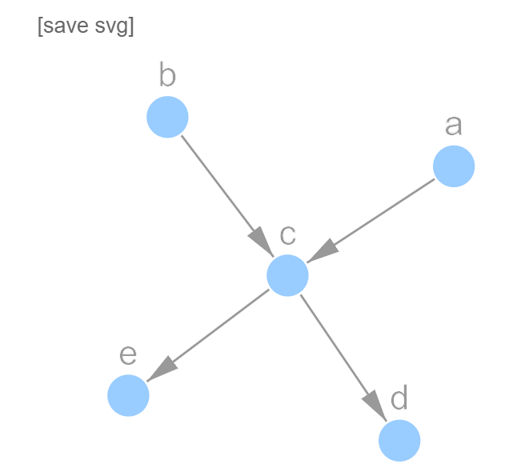
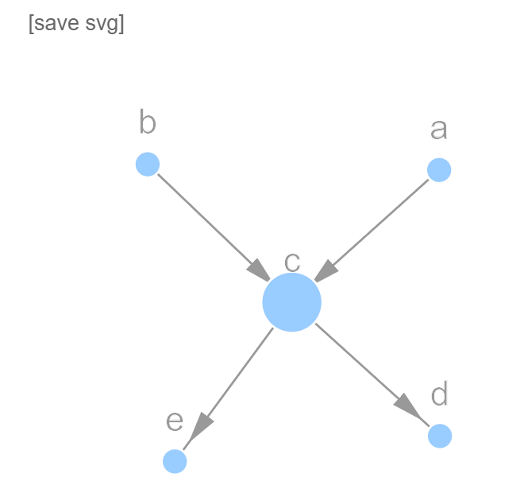

How can I install pathpy?
pathpy is pure python code. It has no platform-specific dependencies and should thus work on all platforms. pathpy requires python 3.x. It builds on the data science packages numpy and scipy. The latest release version 2.0 of pathpy can be installed by typing:
> pip install pathpy2
Please make sure to use the pyPI name pathpy2 as the pyPI package name pathpy has been namesquatted. We are currently working on the transfer of the pyPI name pathpy.
If you want to install the latest development version, you can directly download and install it from our github repository as follows:
> pip install git+git://github.com/uzhdag/pathpy.git
How can I get started?
Once you have successfully installed pathpy, you can test our installation with a very basic (temporal) network analysis and visualisation task. For this, you should first start a jupyter notebook server. Assuming that you have installed jupyter, in the terminal simply type:
> jupyter notebook
This will bring up your browser. Create an empty python 3 notebook by clicking the New button. In this notebook, we first need to import pathpy. Enter the following code and run the cell by pressing Shift+Enter:
import pathpy as pp
We can create a simple (directed) network by entering the following code and running the cell:
n = pp.Network(directed=True)
n.add_edge('a', 'c')
n.add_edge('b', 'c')
n.add_edge('c', 'd')
n.add_edge('c', 'e')
print(n)
To visualise this network, we can just enter the name of the variable in a jupyter cell and run it:
n
Note that this visualisation is interactive, i.e. you can drag nodes, zoom, and pan. To calculate node centralities, we can use the functions in the module pathpy.algorithms.centralities. To calculate the betweenness centralities of all nodes, we can write:
c = pp.algorithms.centralities.betweenness(n)
print(c)
Executing this cell will print a dictionary that contains the betweenness centralities of all nodes. We can easily use this centralities to influence the visualisation of the network by means of pathpy's styling mechanism. For instance, to scale the sizes of nodes according to their betweenness centrality we can write:
style = {}
style['node_size'] = {v:3+u for v,u in c.items()}
pp.visualisation.plot(n, **style)

If you are interested in pathpy's advanced visualisation features, please check the units of this three hour hands-on tutorial.
The key feature of pathpy is its ability to analyse and visualise temporal networks. We can easily create a small example temporal network as follows:
t = pp.TemporalNetwork()
t.add_edge('a', 'b', 1)
t.add_edge('b', 'a', 3)
t.add_edge('b', 'c', 3)
t.add_edge('d', 'c', 4)
t.add_edge('c', 'd', 5)
t.add_edge('c', 'b', 6)
print(t)
To generate a dynamic and interactive HTML visualisation of such a temporal network we again simply enter the name of the variable in a jupyter cell and run it:
t
Using the default parameters, this visualisation will run too fast. We thus want to control the time of this animation. We can again use pathpy's styling mechanism. With the following style, we will adjust the appearance of nodes and edges as well as the temporal aspects of the visualisation:
style = {
'ts_per_frame': 1,
'ms_per_frame': 2000,
'look_ahead': 2,
'look_behind': 2,
'node_size': 15,
'inactive_edge_width': 2,
'active_edge_width': 4,
'label_color' : '#ffffff',
'label_size' : '24px',
'label_offset': [0,5]
}
pp.visualisation.plot(t, **style)
Note that this visualisation is again interactive, i.e. we can interact with the temporal network while the animation is running!
You might want to share such an animation either via E-Mail or via the Web. In pathpy, this is as easy as it can get. We can simply export the visualisation as a stand-alone HTML5 file. This file contains both the data as well as the interactive and dynamic visualisation, so you can simply send it around or upload it to a web server. We can try this:
pp.visualisation.export_html(t, 'my_temporal_network.html', **style)
A file will be created in the directory where your jupyter notebook server was started. Just open this HTML5 file in your browser to see the animation.
Are there any known issues?
We would like users to be aware of the following known issues in the latest version of pathpy:
- Depending on whether or not the dependency package
scipyhas been compiled with the numerics packageMKLoropenblas, considerable numerical differences can occur, e.g. for eigenvalue centralities, PageRank, spectral clustering, and other measures that depend on the eigenvectors and eigenvalues of matrices. Please refer toscipy.show_config()to show compilation flags. We are currently investigating this issue. - Interactive visualisations in jupyter are currently only supported for
juypternotebooks, stand-alone HTML files, and thejupyterdisplay integrated in IDEs like Visual Studio Code. Due to its new widget mechanism, interactive d3js visualizations are currently not available forjupyterLab. - The visualisation module currently does not support the drawing of edge arrows for temporal networks with directed edges. However, a powerful templating mechanism is available to support custom interactive and dynamic visualisations both for static and temporal networks.
- The visualisation of paths in terms of alluvial diagrams within jupyter is currently unstable. This is due to the asynchronous loading of external scripts and possible network latencies e.g. in wireless networks. We will replace this functionality in a future version.
We are working on a solution to these issues in the next release. An up-to-date list of open issues can be found at our issue tracker. For the installation of development versions in which your issue might already have been fixed please refer to the installation instructions above.